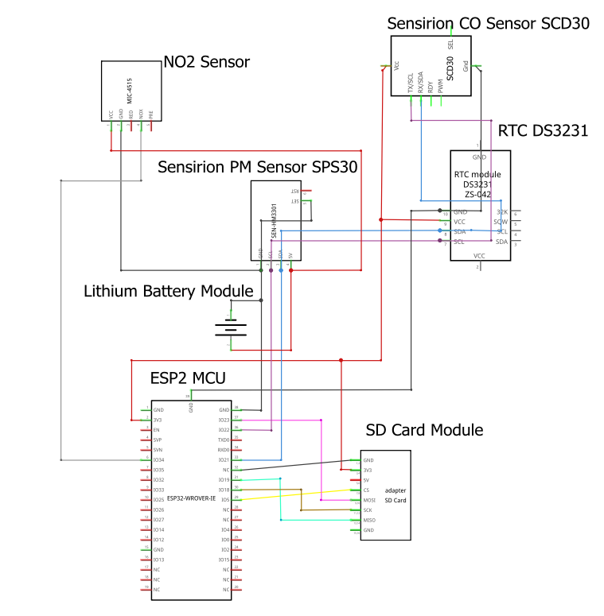

Live CO₂, PM, RH/Temp via ThingSpeak + GPS (opt-in)
Sensor data is continously sent from ESP32 to Thingspeak. Press the 'Start GPS Upload' button to allow device tracking and the sending of device data to Thingspeak.
Status: Idle • Parity: odd (auto) • Align: waiting
Writes: field7=Latitude, field8=Longitude • slot = —
Latest CO₂: Loading... ppm
Latest PM2.5: Loading... µg/m³
Latest PM10: Loading... µg/m³
Latest PM1.0: Loading... µg/m³
Latest Temp: Loading... °C
Latest Humidity: Loading... %
This system uses the following components:
Electronics are housed in a water-resistant plastic lunchbox with two dedicated inlets positioned directly over the SPS30 and SCD30. Each inlet is covered by a small, downward-facing hood (cut from a plastic drinks bottle) to promote ambient airflow while shedding rain and spray. The enclosure exterior is wrapped in aluminium foil tape, which reduced solar heating and eliminated missed reads observed during early tests.
Inlets are oriented cross-wind with the hoods angled slightly downward. This reduces splash entry, and improves representativeness of ambient air over the roof. The unit is mounted away from the exhaust path of its vehicle and other vehicles on the road.
The enclosure is secured on the vehicle roof using a high-strength magnet (from a trailer-light mount) plus two suction cups; bungee straps across the lid provide redundancy. This configuration remained stable at motorway speeds (tested up to ~120 km/h) and maintained consistent airflow to the sensor inlets.
Sensors sampled every 5 s. During the July/August 2025 trials we logged to microSD and uploaded to ThingSpeak and Blynk. Cloud uploads used even/odd 40 s slots (sensors vs GPS), giving an effective merged cadence of ~80 s. View the results of each test on Google Maps by expanding the map below:
Note: Some nearby fixed stations were inactive on our dates (e.g., Ballymun Library, Emo), so fixed–mobile comparisons were performed only where fixed data were available.